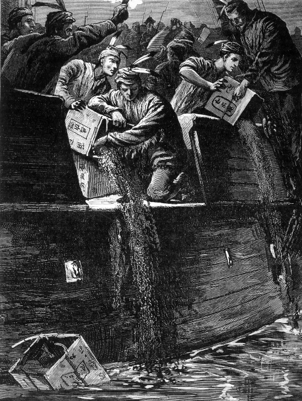
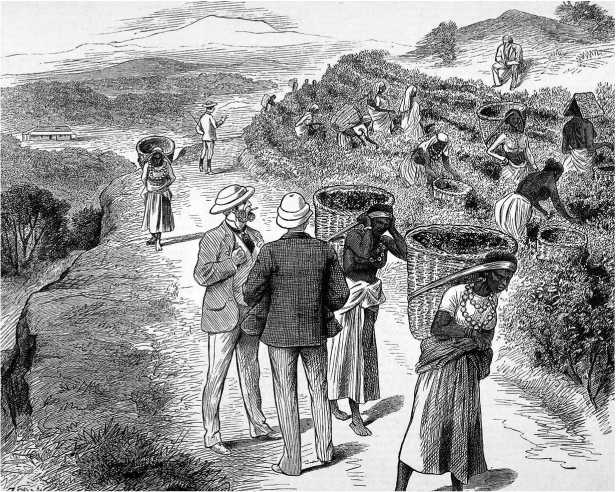

История в бокалах . Власть чая.


Путь этого знаменитого растения был
чем-то вроде поиска истины; сначала он был
под подозрением (хоть и очень приятен для
тех, у кого хватило смелости попробовать
его), потом сопротивлялся, когда на него
посягали, затем оставался на вершине,
когда им злоупотребляли, и в конце концов,
благодаря своим достоинствам и многолетним
усилиям, утвердил свой триумф
по всей земле – от хижины до дворца.
Чай и промышленная революция
В 1771 году британский изобретатель Ричард Аркрайт начал строительство фабрики в Кромфорде (графство Дербишир). Аркрайт, самый младший из семи детей, впервые проявил свой предпринимательский талант, когда работал учеником парикмахера. Он изобрел водостойкую краску для волос и открыл мастерскую по изготовлению париков. Успех этого бизнеса обеспечил ему возможность реализовать более амбициозный проект. В 1767 году он приступил к разработке современной прядильной машины. В отличие от «прялки Дженни», ручного устройства, работать на котором мог только квалифицированный оператор, «вращающаяся рама» с приводным колесом автоматически выполняла все процессы.
С помощью часовщика Джона Кэя, который разработал детали для первой модели, в 1768 году Аркрайт построил прототип прядильной фабрики. Результат настолько впечатлил двух богатых коммерсантов, партнеров Аркрайта, что они выделили средства для строительства большой прядильной фабрики в Кромфорде, где станки приводились в движение уже не лошадьми, а водяным колесом.
Успех автоматического прядильного станка сделал Аркрайта ключевой фигурой промышленной революции, превратившей Великобританию в самую развитую страну мира. В каком-то смысле его появление символизировало собой рождение нового мира, в котором ручной труд был почти полностью вытеснен машинами. Водяные и паровые двигатели, новые средства связи и транспорта, разнообразные станки и механизмы повысили скорость, качество обработки и производительность труда в десятки раз.
Благодаря тому, что машины и рабочие были собраны под одной крышей, все этапы производственного процесса можно было тщательно контролировать, а посменная работа обеспечивала максимально эффективное использование дорогостоящего оборудования. Чтобы рабочие не тратили время на дорогу, Аркрайт построил для них дома рядом с фабрикой. В результате производительность труда резко возросла. Один рабочий на фабрике Аркрайта мог выполнять работу 50 прядильщиков. В итоге к концу XVIII века текстиль стал настолько дешев, что Британия начала экспортировать его в Индию, разрушив ее монополию на торговлю тканями.
Подобно кофе, излюбленному напитку клерков, бизнесменов и интеллектуалов в XVII веке, главным напитком первого этапа индустриализации стал чай. Владельцы фабрик предлагали своим работникам бесплатные «чайные перерывы» в качестве бонуса. В отличие от пива, которое традиционно выдавали сельскохозяйственным рабочим, чай не расслаблял, а благодаря наличию кофеина бодрил, помогая сохранять концентрацию во время долгих утомительных смен. Ткач или прядильщик, работавший на ручном станке, мог при необходимости сделать перерыв, а заводские рабочие должны были функционировать как части хорошо смазанной машины, и чай был этой смазкой, обеспечивающей бесперебойную работу фабрик.
Антибактериальные свойства чая предотвращали распространение заболеваний, передающихся через воду. Число случаев дизентерии в Великобритании начиная с 1730-х годов снизилось настолько, что в 1796 году, по воспоминаниям одного наблюдателя, «само название этой болезни почти не известно в Лондоне». К началу XIX века врачи и статистики согласились с тем, что популярность чая была наиболее вероятной причиной улучшения здоровья населения в целом и рабочих, селившихся вокруг заводов в промышленных городах Центральной Британии, в частности. Антибактериальные чайные фенолы, легко проникающие в грудное молоко кормящих матерей, способствовали снижению младенческой смертности и, соответственно, росту населения, что сулило в будущем приток рабочей силы, необходимой для бурно развивающейся промышленности.
С ростом популярности чая связано создание новой процветающей индустрии. Чайный сервиз на столе имел большое социальное значение как для богатых, так и для бедных. В 1828 году один наблюдатель заметил, что фабричные ткачи жили в «домах с маленькими садиками, чистыми и аккуратными… вся семья хорошо одета, мужчины с карманными часами, женщины в красивых платьях… в каждом доме ходики в элегантном корпусе из красного дерева, красивые чайные сервизы из Стаффордшира, серебряные ложечки и кусачки для сахара». Самым известным стаффордширским гончаром был Джозайя Веджвуд. Его чайные сервизы смогли вытеснить китайский фарфор, импорт которого сократился и, в конечном счете, прекратился в 1791 году.
Веджвуд был пионером массового производства и одним из первых стал использовать паровые двигатели для измельчения материалов и штамповки керамических изделий на конвейере. Ремесленники, которые могли выполнять несколько разных задач, уступили место специалистам узкого профиля. Разделение производственного процесса на отдельные операции позволило ему использовать творческий потенциал самых талантливых дизайнеров для создания чайных сервизов.
Очень плодотворной была идея Веджвуда привлекать знаменитостей к рекламе своей продукции. После того как королева Шарлотта, жена Георга III, заказала «полный чайный набор», Веджвуд получил разрешение на продажу подобных предметов для широкой публики под названием «Королевская посуда». Он размещал рекламные объявления в газетах и устраивал презентации своих чайных сервизов, например для императрицы Екатерины II. В то же время благодаря все более изощренному маркетингу стали хорошо известны имена Ричарда Твайнинга (сына Томаса) и других торговцев чаем. В 1787 году Twining прикрепил фирменный знак над дверью своего магазина, этот же знак появился на коробках с чаем и считается теперь самым старым коммерческим логотипом непрерывного использования в мире. Маркетинг принадлежностей для чая и самого чая заложил первые основы современного консьюмеризма.
Другим западным странам потребовалось столетие, чтобы догнать Великобританию. Есть много причин, по которым именно Англии было суждено стать колыбелью промышленности: ее научные традиции, протестантская рабочая этика, необычайно высокая степень религиозной терпимости, достаточные запасы угля, разветвленная сеть дорог и каналов, а также колонии с их поистине безграничными источниками средств для инвестиций. Но и уникальная любовь британцев к чаю также сыграла свою роль, предотвращая эпидемии в новых промышленных городах и помогая утолять голод во время длительных смен. Чай был своего рода паровым двигателем, приводившим в движение рабочих на первых фабриках.
Политика из чайника
Политическая власть Британской Ост-Индской компании, поставлявшей в Великобританию чай, была огромной. На пике коммерческого успеха компания приносила больше дохода и управляла большим количеством людей, чем британское правительство. В то же время пошлина на чай, который она импортировала, составляла не более 10 процентов государственных доходов.
Все это позволяло компании оказывать как прямое, так и косвенное влияние на политику самой могущественной нации на земле. У компании было много влиятельных друзей в высоких кабинетах, ряд ее чиновников просто купили кресла в парламенте.
В сферу разнообразных интересов Ост-Индской компании входил, например, сбор сахарного тростника на Вест-Индских островах – ведь спрос на сахар был напрямую связан с растущим потреблением чая. В конечном счете, зачастую политика компании становилась государственной политикой. Самый известный пример – роль чая в установлении независимости США. В начале 1770-х годов контрабанда чая в Великобританию и ее американские колонии была на пике. Американские колонисты организовали ввоз контрабандного чая из Нидерландов, чтобы избежать уплаты чайной пошлины правительству в Лондоне. (Чайная пошлина была последним из налогов на сырьевые товары, введенных Лондоном для погашения задолженности, возникшей в результате франко-индейской войны.) В результате на лондонских складах компании скопилось почти 10 тысяч тонн нераспроданного чая. Компания задолжала правительству более миллиона фунтов, поскольку пошлину на этот чай, независимо от того, продан он или нет, нужно было платить. Попытка надавить на правительство и разрешить ситуацию в свою пользу удалась.
Продиктованные компанией условия Закона о чае 1773 года включали правительственный кредит в размере 1,4 миллиона фунтов для погашения долга, а также право отправлять чай непосредственно из Китая в Америку. Это означало, что компании пришлось бы платить не британскую импортную пошлину, а более выгодную американскую в размере трех пенсов за фунт. Кроме того, предполагалось, что оплату будут осуществлять агенты компании в Америке, которым предоставят эксклюзивные права на продажу чая. Закон устанавливал налоговые льготы колонистам, что подрывало позиции контрабандистов. Представители компании считали, что колонисты будут им за это благодарны, поскольку цена на чай в итоге упадет.
Это было огромным просчетом. Американские колонисты, особенно в Новой Англии, могли беспрепятственно торговать и без вмешательства из Лондона, будь то покупка мелассы из французских колоний Вест-Индии или контрабандного чая из Нидерландов. Они бойкотировали британские товары и отказались от уплаты налога лондонскому правительству в принципе. Колонистов также возмущало, что правительство передало Ост-Индской компании монополию на розничную торговлю чаем. К чему это могло привести, как не к взрыву? «Ост-Индская компания, если однажды она получит возможность ступить хоть одной ногой на землю этой счастливой страны, не успокоится, пока не станет вашим хозяином, – говорилось в памфлете, распространенном в Филадельфии в апреле 1773 года. – У них есть создающее беду, развратное и деспотическое министерство, которое помогает и поддерживает их. Они набили руку на тирании, грабеже, угнетении и кровопролитии… Таким образом они обогатились; таким образом они стали самой могущественной торговой компанией во Вселенной».

Бостонское чаепитие 1773 года. Демонстранты уничтожили в бостонской гавани груз чая, принадлежавший Ост-Индской компании
Когда закон вступил в силу и корабли компании прибыли в Америку, колонисты помешали им выгрузить чай. А 16 декабря 1773 года группа протестующих в одежде индейцев мохоки (среди них было много купцов, опасавшихся за свои доходы от торговли контрабандным чаем) захватила три корабля компании в гавани Бостона. За три часа они выбросили все 342 сундука с чаем за борт. Аналогичные «чаепития» произошли и в других портах. В ответ британское правительство в марте 1774 года объявило порт Бостон закрытым до тех пор, пока Ост-Индская компания не получит компенсацию за свои потери. Это был первый из так называемых принудительных актов – серии законов, принятых в 1774 году, когда англичане пытались утвердить свою власть над колониями, но в результате только раззадорили колонистов.
Интересно задаться вопросом, началась бы Война за независимость в 1775 году, если бы британское правительство отказалось от чайных «интервенций» и пришло к компромиссу с колонистами. (С американской стороны Бенджамин Франклин, например, выступал за выплату компенсации за уничтоженный чай.) Но история не имеет сослагательного наклонения – спор за чай привел к потере Великобританией своих американских колонии.
Опиум и чай
Позиции Ост-Индской компании укрепились в 1784 году, когда в результате снижения пошлины на импорт чая в Великобританию упала цена на легальный чай. Продажи компании возросли вдвое, уничтожив контрабандную торговлю, но правительство не могло игнорировать растущую в обществе обеспокоенность ее огромным влиянием и коррумпированным поведением должностных лиц. Деятельность компании была поставлена под надзор специального совета, подотчетного парламенту. Ив 1813 году, на волне популярных идей Адама Смита о свободе торговли, монополия компании на азиатскую торговлю (за исключением Китая) была отменена. Компания сконцентрировалась на управлении своими обширными территориями в Индии, после 1800 года основной частью ее доходов стали поступления от индийских земельных налогов. В 1834 году компания лишилась монополии на торговлю с Китаем.
Но даже когда политическое влияние ослабло и на рынок были допущены конкурирующие трейдеры, компания по-прежнему влияла на торговлю чаем благодаря участию в торговле опиумом. Этот мощный наркотик, сделанный из сока, извлеченного из незрелых маковых семян, использовался в медицине с древних времен. Но опийная наркомания стала настолько серьезной проблемой, что власти Китая запретили наркотики в 1729 году. Однако незаконная торговля опиумом продолжалась, и в начале XIX века компания при поддержке британского правительства даже расширила ее. Была создана огромная полуофициальная система по контрабандному ввозу наркотиков в Китай. Целью, помимо прибыли, была нормализация платежного баланса Великобритании.
Проблема заключалась в том, что торговля чаем в обмен на европейские товары не интересовала китайцев. Исключение в XVIII веке было сделано для часов и игрушек с часовым механизмом, производство которых было одной из редких областей, где, по мнению китайцев, европейские технологии заметно опережали китайские. На самом деле к этому времени европейские технологии лидировали уже по всем направлениям, поскольку изоляция Китая от внешнего влияния породила всеобщее недоверие к изменениям и инновациям. Но спрос на «автоматы» вскоре сошел на нет, и компании пришлось платить за чай наличными, точнее, чистым серебром. Мало того, что сложно было достать такое огромное количество серебра (эквивалент – около миллиарда долларов в год в сегодняшних деньгах), но ситуация еще обострилась, когда стало ясно, что цена на серебро растет быстрее, чем на чай, съедая прибыль.
Тогда и возникла идея опиума. Он был таким же ценным товаром, как серебро, по крайней мере для китайских торговцев, готовых заняться этим бизнесом. Культивирование опиума происходило в Индии и контролировалось компанией, которая с 1770-х годов разрешила продажу небольшого количества опиума контрабандистам или напрямую нелегальным китайским торговцам. Таким образом, компания приступила к наращиванию производства опиума, чтобы использовать его вместо серебра для покупки чая. Фактически британцы начали «выращивать» валюту.
Конечно, тот факт, что компания напрямую торгует наркотиком в обмен на чай, тщательно скрывался. Для этого была разработана специальная серая схема. Опиум производили в Бенгалии и продавали на ежегодном аукционе в Калькутте. Его покупали индийские фирмы, формально независимые торговые организации, которым было предоставлено разрешение на торговлю с Китаем. Эти фирмы отправляли опиум в Кантон (Гуанчжоу), где его перепродавали за серебро, выгружали на острове Линтин, а оттуда галерами китайских торговцев везли на материк. Фирмы могли утверждать, что не нарушают закон, поскольку не они отправляли опиум в Китай, а компания могла отрицать свое участие в торговле. И действительно, кораблям компании строго запрещалось возить опиум.
Китайские таможенники хорошо знали, что происходит, но сами были задействованы в этой схеме, будучи подкупленными китайскими торговцами опиумом. Как объяснял американский торговец В. К. Хантер, «система взяточничества (с которой иностранцы ничего не делают) так совершенна, что бизнес ведется легко и регулярно. Временные препятствия возникают, например, когда назначают новых представителей власти… Спустя некоторое время все устраивается, и брокеры снова появляются с сияющими лицами, а мир и безопасность вновь воцаряются на земле». Иногда местные чиновники издавали угрожающие указы, требуя, чтобы иностранные суда, шныряющие в Линтине, заходили в порт на материке либо немедленно отплывали. Иногда обе стороны устраивали демонстрационные погони, и китайские таможенные суда преследовали иностранные корабли до тех пор, пока они не скрывались за горизонтом. Должностные лица могли затем представить отчет, в котором утверждалось, что иностранный контрабандист был изгнан.
Эта преступная схема, с точки зрения компании и ее друзей в правительстве, была чрезвычайно эффективной: контрабандный ввоз опиума в Китай увеличился в 250 раз и к 1830 году достиг 1500 тонн в год. Выручка от его продажи в 1828 году превысила затраты на покупку чая. Серебро путешествовало по обходному пути: фирмы отправляли его обратно в Индию, где компания выкупала его, расплачиваясь чеками, подписанными в Лондоне. Затем серебро отправляли в Лондон и передавали агентам компании, которые возвращали его в Кантон, чтобы закупить чай. И хотя в то время Китай незаконно производил столько же опиума, сколько импортировал, это не могло служить оправданием санкционированного государством гигантского наркотрафика, унесшего тысячи жизней, только ради того, чтобы поддерживать поставки чая в Британию.
Законодательные усилия китайского правительства по прекращению торговли мало на что влияли, поскольку кантонская бюрократия была поголовно коррумпирована. В конце концов в декабре 1838 года император послал своего представителя Линь Цзе-хи в Кантон с поручением раз и навсегда положить конец опийному трафику. К этому времени атмосфера была очень напряженной. Линь приказал китайским торговцам и их британским коллегам немедленно уничтожить все запасы опиума. Они проигнорировали его приказ. В ответ Линь арестовал больше тысячи человек и конфисковал 11 тысяч фунтов опиума, а затем захватил еще 2 тысячи ящиков, арестовал всех иностранных купцов и держал их под стражей до тех пор, пока те не сдали весь опиум, который был публично сожжен. А после того, как два британских моряка убили китайца в драке, Линь изгнал англичан из Кантона.
Это вызвало возмущение в Лондоне, где представители компании и других британских торговцев оказывали давление на правительство, чтобы заставить Китай открыться для широкой торговли, а не пропускать все грузы через Кантон. Нестабильную ситуацию в Кантоне следовало урегулировать в интересах свободной торговли в целом и для защиты торговли чаем (и связанного с ней опия) в частности. Правительство не хотело открыто одобрять опийный бизнес, заявив, что внутренний запрет Китая на опиум не дает китайским должностным лицам права захватывать и уничтожать товары (то есть опиум), принадлежащие британским торговцам. Под предлогом защиты права на свободную торговлю была объявлена война.
«Опиумная война» 1839–1842 годов была короткой и односторонней благодаря превосходству европейского оружия, эффективность которого стала для китайцев сюрпризом. В первой битве в июле 1839 года два британских военных корабля потопили 29 китайских кораблей. На суше китайцы и их средневековое оружие не могли конкурировать с британцами, вооруженными современными винтовками. К середине 1842 года британские войска захватили Гонконг, оккупировали Шанхай и ряд других городов. Китайцы были вынуждены подписать мирный договор, по которому отдавали Гонконг британцам, открывали пять портов для свободной торговли и выплачивали компенсацию серебром, в том числе и за опиум, уничтоженный Линем.
Победа британских торговцев разрушила миф о китайском превосходстве. Власть правящей династии уже была подточена ее неспособностью подавлять постоянные религиозные бунты, а теперь, потерпев поражение от англичан, она была вынуждена открыть свои порты варварским торговцам и миссионерам. Это определило историю второй половины XIX века. Дальнейшие войны с западными державами вынуждали Китай открываться для внешней торговли. Каждое китайское поражение влекло за собой дополнительные коммерческие уступки иностранным державам. Торговля опиумом, который все еще доминировал в импорте, была легализована. Британия взяла под контроль китайскую таможенную службу; импортные текстильные изделия и другие промышленные товары подорвали позиции китайских ремесленников. Китай стал ареной, на которой Великобритания, Франция, Германия, Россия, Соединенные Штаты и Япония вели свое империалистическое соперничество, разрывая страну и конкурируя за политическое господство. Между тем ненависть китайцев к иностранцам росла, а коррупция, подорванная экономика и неконтролируемое потребление опия привели к тому, что некогда могучая цивилизация рухнула. Независимость Америки и гибель Китая – таков был результат влияния чая на британскую имперскую политику и через нее на ход мировой истории.
Из Кантона в Ассам
Еще до начала Первой «опиумной войны» в Великобритании росла озабоченность по поводу опасной зависимости поставок чая от Китая. Задолго до этого, в 1788 году, Ост-Индская компания запрашивала у сэра Джозефа Бэнкса, ведущего ботаника и натуралиста того времени, информацию о том, какие растения можно успешно культивировать в горных регионах Бенгалии. Хотя чай был во главе списка, компания проигнорировала этот совет. В 1822 году Королевская академия искусств учредила приз в 50 гиней «тем, кто мог вырастить и собрать наибольший объем китайского чая в Британской Вест-Индии, на мысе Доброй Надежды, в Новом Южном Уэльсе или в Ост-Индии». Но приз так и не был присужден. Ост-Индская компания неохотно рассматривала другие источники поставок вплоть до утраты монополии на торговлю с Китаем в 1834 году.
Лорд Уильям Кавендиш-Бентинк, глава компании и генерал-губернатор Индии, с энтузиазмом воспринял идею «обеспечить лучшую, чем капризы китайского правительства, гарантию поставок чая». Комиссия, созданная Бентинком, намеревалась запросить информацию у голландцев, которые пытались выращивать чай на Яве с 1728 года, и посетить Китай в надежде получить семена и квалифицированных рабочих. Тем временем начались поиски места, наиболее подходящего для чайных плантаций.
Сторонники идеи утверждали, что выращивание чая в Индии принесет пользу обеим сторонам. Британские потребители будут уверены в более надежных поставках, а индусы, оставшиеся без средств к существованию после того, как ткацкая промышленность Индии была уничтожена импортом дешевых британских тканей, получат работу. Кроме того, индийский фермер, по словам одного сторонника нового проекта, «будет иметь здоровый напиток для себя и ценный товар для продажи».
Культивирование чая также сулило большую выгоду. Традиционная китайская манера производства чая была далека от промышленных стандартов, оставаясь неизменной на протяжении сотен лет. Мелкие сельские производители продавали свой чай местным посредникам, которые отправляли его на лодках по рекам или караванами через горные перевалы к побережью, где купцы смешивали его, упаковывали и продавали европейским торговцам в Кантоне. Расходы на выплаты всем участникам этой цепочки, транспортировку, пошлину и налоги увеличивали стоимость чая почти вдвое от отпускной цены. Соответственно предприятие, производящее свой чай в Индии, по определению должно было стать более эффективным. Кроме того, применение новых промышленных методов на плантациях и автоматизация как можно большего количества процессов при обработке могли бы, как ожидалось, повысить производительность и, следовательно, увеличить прибыль. С началом культивации чая в Индии империализм и промышленная революция зашагали в ногу.
Ирония заключалась в том, что буквально под носом членов комиссии Бентинка уже росли чайные кусты. В 1820-х годах Натаниэль Валлих, управляющий ботаническим садом Ост-Индской компании в Калькутте, обнаружил в Ассаме неизвестное растение. Он не распознал в нем чайный куст, приняв за разновидность камелии. После того как в 1834 году Валлих вошел в комиссию Бентинка, он разослал вопросник, чтобы установить, какие районы Индии подходят для выращивания чая. Ответ из Ассама пришел в виде образцов черенков, семян и готового продукта чайного производства. На этот раз даже Валлих не сомневался в том, что это чай, и комиссия радостно доложила об этом Бентинку. «Чайный кустарник, вне всякого сомнения, является коренным жителем Верхнего Ассама… Мы не колеблясь объявляем это открытие… безусловно, самым важным и ценным, которое когда-либо делалось в сельскохозяйственной или коммерческой сфере империи».
Специальная экспедиция подтвердила, что чай действительно растет в серой пограничной зоне Ассама, куда компания случайно вторглась за несколько лет до этого, чтобы воспрепятствовать вторжению бирманцев в Индию. В то время было решено установить марионеточный королевский режим в Верхнем Ассаме, а в Нижнем Ассаме заняться сборами налогов на землю, урожай и т. д. Король оставался на своем троне ровно до того момента, когда в его владениях был найден чай. Но путь от сбора дикого чая Ассама до процветающей чайной промышленности оказался более тернистым, чем ожидалось. Должностные лица и ученые, ответственные за создание производства, никак не могли определиться со способом культивирования – где лучше выращивать чай, на равнинах или холмах, в жарком или холодном климате? Никто не знал, как лучше всего организовать производство. Усилия двух китайских специалистов, которые привезли растения и семена в Индию, не могли заставить их цвести.

Индийская чайная плантация в 1880 году. К этому времени производство чая в Индии обходилось дешевле, чем в Китае
Проблема была окончательно решена Чарльзом Брюсом, авантюристом и исследователем, знакомым с людьми, языком и обычаями Ассама. Опираясь на знания местных жителем и опыт китайских специалистов, он разработал методику окультуривания дикорастущего чая, узнал, где лучше всего его выращивать, как собирать, складировать и высушивать листья. В 1838 году первая небольшая партия чая из Ассама получила высокую оценку специалистов в Лондоне. Теперь, когда была создана база для производства чая в Индии, Ост-Индская компания разрешила предпринимателям разбивать чайные плантации. Зарабатывать деньги она предпочитала, сдавая в аренду землю и облагая налогом полученный чай.
В реализации Индийского проекта решила принять участие группа лондонских торговцев, создавших новую компанию «Ассам». Выражая сожаление по поводу «унизительных обстоятельств», в которых британцы были вынуждены торговать с Китаем (лишь «опиумная война» положила этому конец), они заявили, что готовы взяться за дело, поскольку чай – это «огромный источник прибыли и продукт национального значения».
В отчете, составленном Брюсом, говорилось: «Когда у нас будет достаточное количество производителей… как у них в Китае, то мы можем надеяться сравниться с этой страной в дешевизне продуктов, мы можем и должны это сделать». Основная проблема, отметил Брюс, будет заключаться в том, чтобы найти достаточное количество рабочих для чайных плантаций. Нежелание местных жителей выполнять такую работу он объяснял широко распространенным пристрастием к опиуму, но был уверен, что в Ассам хлынут безработные из соседней Бенгалии.
У компании «Ассам» не было проблем с привлечением средств. Ее акции были выкуплены так быстро, что многие потенциальные инвесторы не смогли в этом поучаствовать. В 1840 году «Ассам» взял под контроль большинство экспериментальных чайных садов Ост-Индской компании. Но новое предприятие оказалось катастрофически неудачным. Компания наняла всех китайских рабочих, которых могла найти, ошибочно полагая, что их национальности достаточно для того, чтобы выращивать чай. Сотрудники компании тем временем тратили деньги фирмы с размахом. В результате был собран маленький урожай низкого качества, и акции компании потеряли 99,5 процента их стоимости. Только в 1847 году после увольнения Брюса, к тому времени операционного директора компании, удача улыбнулась коммерсантам. К 1851 году бизнес стал приносить прибыль, и в том же году чай «Ассам» был представлен в Лондоне на «Великой выставке промышленных работ всех народов», продемонстрировав могущество и богатство Британской империи и доказав всему миру, что для производства чая не нужно быть китайцем.
Чайный бум в Индии породил десятки новых компаний – многие из них в погоне за сверхприбылями потерпели неудачу, но к концу 1860-х годов производство чая было поставлено на промышленные рельсы. Чай по-прежнему собирали вручную, но сушку, сортировку и упаковку осуществляли машины. Индустриализация резко снизила затраты: если в 1872 году стоимость производства фунта чая в Индии и Китае была примерно одинаковой, то к 1913 году она сократилась на три четверти. Железные дороги и пароходы позволили снизить расходы на транспортировку чая в Великобританию. Китайские экспортеры были обречены.
За несколько лет Китай полностью утратил свои позиции главного поставщика чая. Цифры хорошо иллюстрируют историю: в 1859 году Великобритания импортировала из Китая 30 тысяч тонн чая, а к 1899 году – 7 тысяч тонн, в то время как импорт из Индии вырос до почти 100 тысяч тонн. Рост индийской чайной промышленности нанес сокрушительный удар по чайным фермерам Китая и еще больше дестабилизировал страну, которая погрузилась в хаос мятежей, революций и войн в первой половине XX века. Не пережила этот период и Ост-Индская компания. Индийский мятеж – массовые выступления, направленные против компании, спусковым крючком для которых стало восстание Бенгальской армии в 1857 году, – вынудил британское правительство взять в свои руки контроль над Индией, и в 1858 году компания была упразднена.
Индия и сегодня остается ведущим производителем и потребителем (23 процента мирового производства) чая, за ней следуют Китай (16 процентов) и Великобритания (6 процентов). В мировом рейтинге потребления чая на душу населения британское имперское влияние все еще отчетливо видно в структуре потребления его бывших колоний. Великобритания, Ирландия, Австралия и Новая Зеландия – четыре из двенадцати самых «чаелюбивых» стран. За ними идет Япония, затем страны Ближнего Востока, где чай, как и кофе, выиграл от запрета на алкогольные напитки. Американцы, французы и немцы потребляют в десять раз меньше чая, чем англичане или ирландцы, – в этих странах предпочитают кофе.
Энтузиазм Америки в отношении кофе в ущерб чаю часто ошибочно приписывается чайным законам и Бостонскому чаепитию. Конечно, британский чай пал жертвой Войны за независимость, что побудило американских колонистов искать местные альтернативы. Употребление «Чая свободы» из листьев вербейника, «Бальзам-чая» из подорожника, листьев смородины и шалфея, несмотря на их неприятный вкус, было для них способом проявления патриотизма. Но как только война закончилась, чай быстро отвоевал свои позиции. Через десять лет после Бостонского чаепития он был гораздо популярнее кофе, самого распространенного напитка середины XIX века. Спрос на кофе вырос после отмены пошлины на импорт в 1832 году. Налог ненадолго вернулся во время Гражданской войны, но был снова отменен в 1872 году. «Америка признала кофе свободным от финансовых обязательств, и рост потребления огромен», – отмечал лондонский иллюстрированный журнал News в том году. Падение популярности чая связывают и с сокращением потока иммигрантов из Великобритании.
История чая отражает размах и как инновационную, так и разрушительную силу Британской империи. Чай был и остается любимым напитком нации, которая в течение столетия или около того была глобальной сверхдержавой. Британская администрация в колониях, солдаты на полях сражений в Европе и в Крыму, рабочие Мидлендса – все пили чай. Историческое влияние Британской империи и ее главного напитка на мировые процессы сохраняется до сих пор.